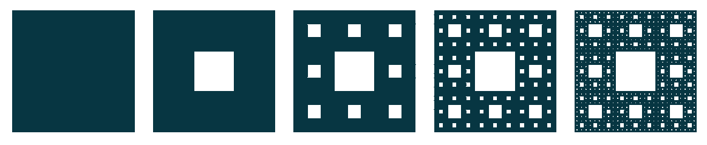
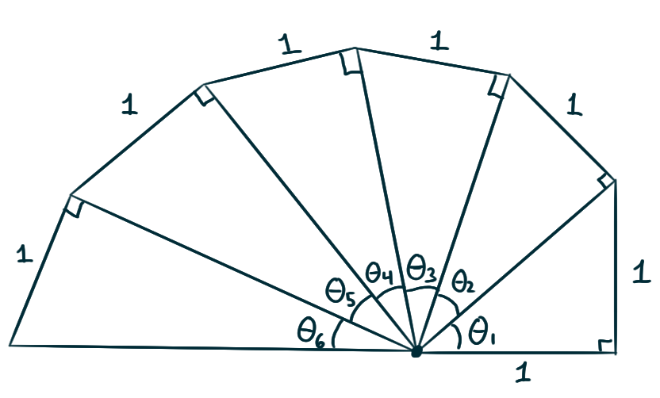
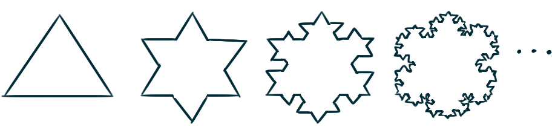

Every regularly repeating decimal number
can be written as a rational number (a fraction).
For example,
\[\begin{align*}
0.\overline{69}
= 0.696969\dots
&= 0.69 + 0.0069 + 0.000069 + \dotsb
\\ &= 69 \sum_{n=1}^{\infty} \left(\frac{1}{100}\right)^n
= 69 \left(\frac{1}{100-1}\right)
= \frac{23}{33}\,.
\end{align*}\]
The critical idea behind this calculation
is that the “repeating” feature of the number
can be expressed as a geometric series.
If the regularly repeating decimal has an initial non-repeating portion,
you may simply write that initial portion as a fraction,
and add it back on later.
For example,
\[
4.89\overline{69}
= 4.20 + 0.\overline{69}
= \frac{420}{100} + 0.\overline{69}
= \frac{420}{100} + \frac{23}{33}
= \frac{808}{165}\,.
\]
Using this technique, how do you write
\(0.1642857\overline{142857}\) as a rational number?
Recalling the facts that
\[\frac{1}{1+x^2} = \frac{\mathrm{d}}{\mathrm{d}x}\arctan(x)
\qquad\text{and}\qquad
\frac{1}{1-x} = \sum_{n=0}^{\infty} x^n\,, \]
write down a formula for the Maclaurin series of arctangent.
Then, recalling that \(\pi = 4\arctan(1),\)
write down a series representation for \(\pi.\)
It should be noted however that
since \(1\) is outside the interval of convergence
of the Maclaurin series of arctangent,
this series only conditionally converges to \(\pi.\)
The Catalan numbers
are a sequence of numbers that appear
in some counting (combinatorics) problems.
The first few Catalan numbers are
\[ 1\quad 1\quad 2\quad 5\quad 14\quad 42\quad 132\quad 429\quad 1430\quad 4862\quad 16796\quad 58786\quad\dotsb \]
Letting \(C_n\) denote the \(n^\text{th}\) Catalan number,
write down a formula for the Maclaurin series
of the function \(f(x) = \sqrt{1+x}.\)
In a similar vein, you should be aware of the
Bernoulli numbers
if you want to write down the Taylor series for tangent,
and you should be aware of the
Euler numbers
if you want to write down the Taylor series for secant.
Challenges
Consider the following sequence of shapes:
start with a unit square.
Remove its middle ninth square,
Then remove the middle ninths
of the remaining eight squares around that middle one.
Then remove the middle ninths
of all the remaining squares around each of those middle ones,
and so on.

Source: Wolfram MathWorld
The shape that is the limit of this process
is called the Sierpiński Carpet.
Prove that the total sum of the areas being removed is \(1,\)
which implies that the Sierpiński Carpet has area zero.
For each of these series,
describe the value(s) of \(p\) for which it converges.
\[
\sum_{n=2}^\infty \frac{1}{n\ln(n)^p}
\qquad\quad
\sum_{n=3}^\infty \frac{1}{n\ln(n)\big(\ln(\ln(n))\big)^p}
\qquad\quad
\sum_{n=1}^\infty \frac{\ln(n)}{n^p}
\]
Show that this series diverges.
\[ \sum_{n=2}^\infty \frac{1}{\big(\ln(n)\big)^{\ln\left(\ln(n)\right)}} \]
A sequence of right triangles are constructed as follows:
The first triangle has legs of length one,
and each subsequent triangle has a height of length one
and has as its base the hypotenuse of the triangle that precedes it.

Show that the sum of the sequence of angles formed diverges,
thereby showing that this construction will spiral indefinitely
around its central point.
How many triangles must be added before one full rotation is made?
What is the limit of this sequence?
\[
\sqrt{2},\quad
\sqrt{2\sqrt{2}},\quad
\sqrt{2\sqrt{2\sqrt{2}}},\quad
\sqrt{2\sqrt{2\sqrt{2\sqrt{2}}}}, \quad
\dotsc
\]
Suppose you have a bunch of copies of a single hardback book.
Imagine stacking them on top of each other, hanging over the edge of a table,
with each subsequent book hanging further over the edge than the last.
What is the smallest number of books you’d have to stack
before the topmost book is entirely off the table,
i.e. the left-most edge of the top book is to the right of the table edge?
(Hint: consider centers of mass.)
Prove that if you continue stacking books,
the pile can become arbitrarily far from the edge of the table.
Construct a sequence of shapes as follows:
The first shape is an equilateral triangle with unit side-lengths,
and each subsequent shape is the result of
joining a new equilateral triangle to the middle-third
of every edge of the preceding shape.

The shape that is the limit of this process
is called Koch’s Snowflake.
Let \(L_n\) denote the number of sides
of the \(n\mathrm{th}\) shape in this sequence.
Find a formula for \(L_n.\)
Let \(P_n\) denote the perimeter
of the \(n\mathrm{th}\) shape in this sequence.
Find a formula for \(P_n,\)
and show that the sequence \(\{P_n\}\) diverges
Let \(A_n\) denote the area
of the \(n\mathrm{th}\) shape in this sequence.
Find a formula for \(A_n,\)
and show that \(\{A_n\}\) converges
and find its value.
The point of this example, and doing these calculations,
is to marvel at the existence of a shape
that has an infinite perimeter but encloses finitely much area.
Find the sum of the series
\[ 1 +\frac 1 2 +\frac 1 3 +\frac 1 4 +\frac 1 6 +\frac 1 8 +\frac 1 9 +\frac{1}{12} +\dotsb \]
where the terms are all the reciprocals of the positive integers
whose only prime factors are \(2\) and \(3\).
Consider the prototypical conditionally convergent series
\[
\sum_{n=1}^{\infty} (-1)^{n+1}\frac{1}{n}
\;\;=\;\;
1 -\frac{1}{2} +\frac{1}{3} -\frac{1}{4} +\frac{1}{5} -\frac{1}{6} +\frac{1}{7} - \dotsb
\]
These tasks constitute a step-by-step proof that,
when summed in this particular order,
the value of this series is \(\ln(2).\)
Notice that the right-hand side of the previous equation
can be written this way:
\[
\frac{1}{n+1} +\frac{1}{n+2} + \dotsb + \frac{1}{2n}
\;\;=\;\;
\frac{1}{n}\left(\frac{1}{1+\frac{1}{n}} +\frac{1}{1+\frac{2}{n}} + \dotsb + \frac{1}{1+\frac{n}{n}}\right)
\,.
\]
Write down the right-endpoint Riemann sum for the integral
\[ \int\limits_{0}^{1} \frac{\mathrm{d}x}{1+x}\,, \]
and make sure you understand how this relates
to the previous prompt.
Evaluate the limit of the sum as \(n \to \infty\)
by evaluating that integral,
and realize this gives us the intended result
that the value of the series is \(\ln(2).\)
Since the series
\[
\sum_{n=1}^{\infty} (-1)^{n+1}\frac{1}{n}
\;\;=\;\;
1 -\frac{1}{2} +\frac{1}{3} -\frac{1}{4} +\frac{1}{5} -\frac{1}{6} +\frac{1}{7} - \dotsb
\]
is only conditionally convergent,
for any real number \(r\)
there exists a rearrangement of the series
such that the series converges to \(r.\)
Find a rearrangement of the series
that sums to \(\ln\!\left(\sqrt{2}\right).\)
If \(p \gt 1\), what is a closed-form expression for
\[
\frac{ 1 + \frac{1}{2^p} + \frac{1}{3^p} + \frac{1}{4^p} + \dotsb}
{ 1 - \frac{1}{2^p} + \frac{1}{3^p} - \frac{1}{4^p} + \dotsb } \,?
\]
What is the area of the region bounded between the curve
\(y = 2\mathrm{e}^{-x}\sin(x)\) and the positive \(x\)-axis?
Note this area is not simply equal to
\[\int\limits_{0}^{\infty} 2\mathrm{e}^{-x}\sin(x) \,\mathrm{d}x\]
Consider the rational function \[ f(x) = \frac{x}{1-x-x^2}\,.\]
Recall the definition of the sequence
of Fibonacci numbers \(\{F_i\}_{i=1}^{\infty}\)
where \(F_1 = F_2 = 1\) and \(F_n = F_{n-1} + F_{n-2}.\)
Show that the Maclaurin series of the function \(f\)
is \(\sum_{n=1}^\infty F_nx^n,\)
where the \(n\text{th}\) coefficient
is the \(n\text{th}\) Fibonacci number.
By writing \(f(x)\) as a sum of partial fractions
and thereby obtaining the Maclaurin series in a different way,
find an explicit formula for
the \(n\text{th}\) Fibonacci number.
Here’s a step-by-step guide to a historical method (1700s)
for calculating a decimal approximation of \(\pi.\)
Show that for \(xy \neq -1\)
\[\arctan(x) - \arctan(y) = \arctan\left(\frac{x-y}{1+xy}\right)\]
if the left side lies between \(-\pi/2\) and \(\pi/2\).
Show that
\[\arctan\frac{120}{119} - \arctan\frac{1}{239} = \frac \pi 4\,.\]
Deduce the following formula of John Machin (1680-1751):
\[4\arctan\frac 1 5 - \arctan\frac{1}{239} = \frac{\pi}{4}\]
Use the Maclaurin series for arctan to show that
\[ 0.197395560 \lt \arctan\frac 1 5 \lt 0.197395562 \]
and
\[ 0.004184075 \lt \arctan\frac{1}{239} \lt 0.004184077 \]
Deduce that, correct to seven decimal places,
\(\pi \approx~ 3.1415927\)
John Machin originally used this method in 1706
to calculate \(\pi\) accurately to 100 decimal places.
This formula, and
other formulas based on it,
were popularly used to compute \(\pi\)
before the age of electronic computers.
Since the digital age the problem of computing \(\pi\)
has become the standard problem
by which engineers benchmark their super computers.
A chronology of computations of \(\pi\) can be found on Wikipedia.
As of March 2022, the record is 100 trillion digits,
set by Google engineer Emma Haruka Iwao
using the Chudnovsky algorithm.